特別報導
特別報導1 創新提升，專利佈局與傑出團隊
持續創新及增強研發能力是企業永續經營的關鍵，南亞科技致力於提升製程效率與產能，以技術能力開發、研發流程優化、創新人才儲備等面向發展，確保競爭優勢，南亞科技培育「創新智權團隊」，為保護及活用研發成果，積極在全球範圍內建立自己的知識產權；另以「傑出人才」專案在公司內部發起研發創新競賽，鼓勵同仁跨部門進行創新提案合作，強化南亞科技創新底蘊。
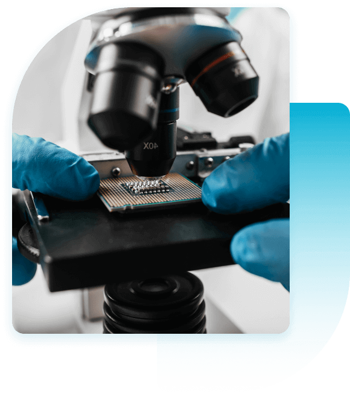
創新智權，專利佈局
南亞科技為有效因應技術及市場的競爭，積極整合研發資源並有計畫地落實技術性及策略性專利布局，以滿足數量與品質層面的專利戰略需求。
南亞科技2023年首度入選由科睿唯安(Clarivate)發布的「全球百大創新機構」，代表公司在技術創新及專利策略質量成果的表現上獲得國際評鑑單位的肯定。2023年專利核准件數達953件，已於全球累計獲得超過6,800篇之專利，並以具備完整的智慧財產權管理制度，通過TIPS台灣智慧財產管理制度認證。我們將繼續保持研發精神，成為智慧世代中最佳的記憶體夥伴。
- 2023年首度入選科睿唯安 全球百大創新機構
- 通過TIPS台灣 智慧財產管理制度認證
- 2023年專利核准件數 953 件
- 全球累計專利 > 6,800 件
南亞科技專利布局管理策略圖
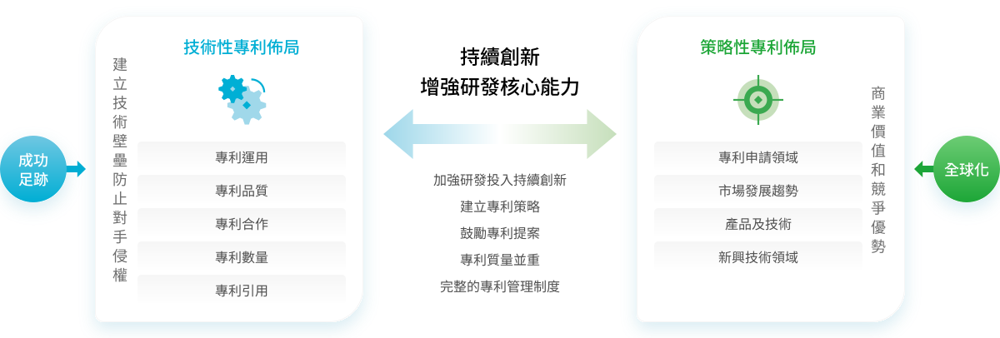
近年專利成果
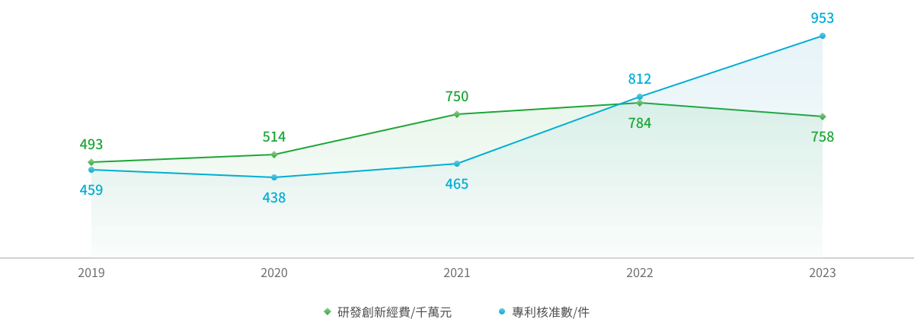
創新培養，傑出團隊
為激勵公司內部創新能量，南亞科技自2005年起發起「傑出團隊競賽」專案，邀請同仁至少需橫跨三個部門組隊，以團隊自發性創新、提案效益及合作核心價值等主軸進行競賽評選，自2015年起，每年平均約有15隊團隊參與競賽，除了培養公司創新氛圍之外，也藉由各團隊提案優化各項營運作業流程，達到以創新推動永續發展之目的，2023年提案亮點如下：
-
特優團隊
跳脫傳統機台設計思維，採用最新的AI手法取代硬體偵測機制，藉此取代過往高架作業及減少作業人員無效浪費，達到精實生產的目標，更大幅提升工廠安全性，符合ISO45001環境安全衛生中改善機會的精神。
-
優勝團隊
開發新實驗配方，提升特定製程良率3.6%，並利用新AI辨識分析手法取代傳統做法，讓開發的相關數據得以精準分析，導正實驗方向與減少報廢成本，每年節省新台幣約155,400萬元。
-
入圍團隊
南亞科技歷經三個研發世代，因應不同製程結構，共開發出135個光學量測模型，提供製程快速監控並優化，縮短製程研發的時程，達到快速滿足研發量測需求、準確監控製程實驗變異，以及無損保留晶圓後續價值。
傑出團隊競賽近8年參賽數據
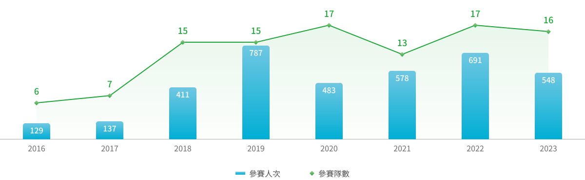
特別報導2
AWS認證通過
邁向水資源永續目標
南亞科技於2023年導入全球唯一可持續水管理標準（Alliance for Water Stewardship Standard，AWS），並於2023年通過評鑑，2024年獲得AWS最高等級：白金級證書。從每一滴水的源頭、過程用水、最終放流，持續以有效的務實管理、維護生態環境、珍惜每一滴用水及持續強化水資源使用效率，並依循國際AWS標準，積極落實AWS五大推動成果，持續與系統化來實踐水資源永續管理。
制定政策與方針，實踐良好水管理
制定公司水資源管理政策、作業標準流程與程序，以系統化管理提升水管理效率；透過公司風險管理架構檢視水資源相關風險，推動相關改善措施及制定應變計畫，有效管控風險；適時分享水資源相關資訊、參與環保公益，並推動供應鏈的風險管理與輔導改善，逐步落實永續供應鏈之推動。
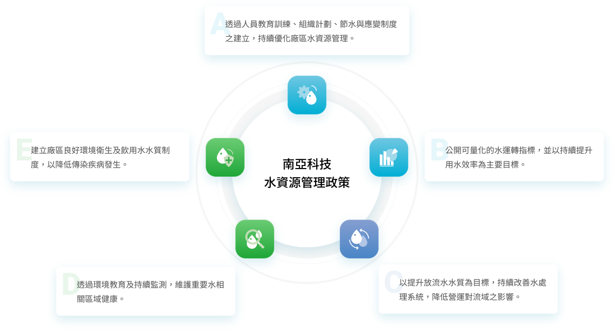
-
積極推動節水，減少水資源耗用
藉由工作方針展開落實節水成效、由減量與回收等節流手法達到減量的效果、透過日常管理的手法來推動節水、建立廢水分類處理並採多重回收再利用等四大推動方針，將水資源做最大化運用，近年更著重於回收系統建置，廠區設置多種回收系統，並搭配各項節水措施推動，2023年製程水回收率達99%，各類廢水回收總量達583萬噸，佔總用水量比例達172%。
-
製程水回收率及回收水量
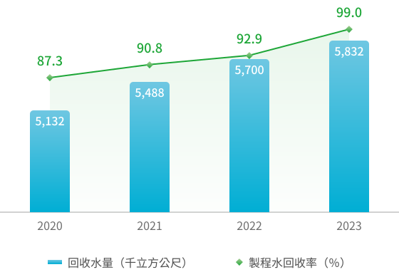
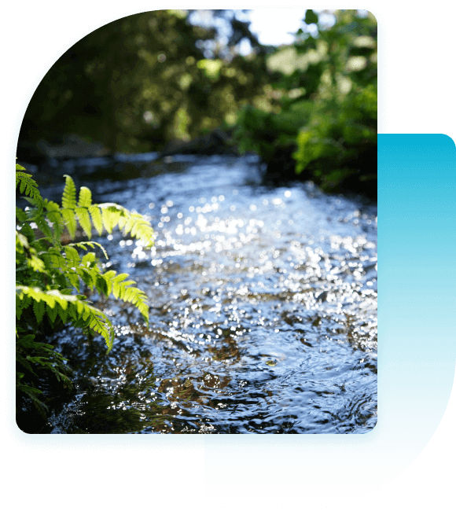
優良放流水質，降低環境污染
放流水排放水質除符合法規標準外，也訂定了更為嚴謹的內控標準。依據當地廢污水排放法令及客戶要求相關規範，南亞科技廢水排放透過不定期的內部稽核制度確保各廠區之廢水排放符合規範；此外，廢水排放口依法令規定設有自動連續監測系統(CWMS)，即時將水質資訊回傳予主管機關，並可於環保局網站即時查詢排放數值，使政府機關及民眾瞭解本公司的水質狀況，達到全民監督的效果。南亞科技歷年廢水排放皆符合放流水排放標準，且無相關罰單產生，我們也主動於永續報告書中揭露年度廢水排放檢測數據，使利害關係人能隨時瞭解本公司的廢水處理狀況。
關注水相關區域健康，維護良好環境生態
定期針對放流溪域進行水質檢測，以維護重要水相關區域的環境健康。每年持續辦理環境公益活動，例如自2020年起每年與荒野保護協會合作，於五股溼地辦理移除小花蔓澤蘭活動，以維護生物及棲地的多樣性的完整，讓原生生物能在棲地中生存，避免受到危害。與價值鏈夥伴他公司聯合舉辦淨灘活動，2020~2022年共舉辦2場，淨灘不僅達到了撿垃圾的目的，更重要的是推廣是對於環境教育以及減塑的精神力量。
-
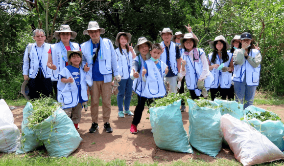
五股溼地移除小花蔓澤蘭活動 -
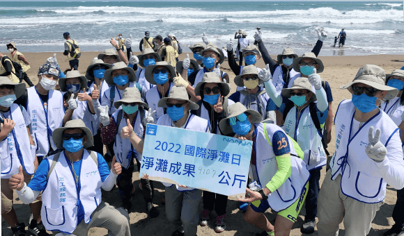
淡水河口淨灘活動
安全飲水與衛生環境，維護人員健康
南亞科技廠區內各樓層茶水間均設有飲水機，飲用水水源充足，為確保飲水安全，管理單位定期委外專業廠商進行水質檢測，並將檢測日期與結果張貼於飲水機上供查核，可讓使用者安心飲用，定時均安排有清潔人員維護茶水間清潔，並訂有茶水間使用規範，張貼於茶水間明顯處，提醒使用者維護衛生及清潔。
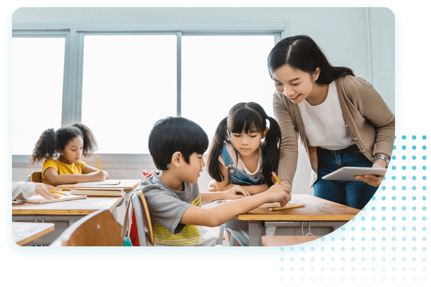
特別報導3 偏翩起飛：扶植偏鄉、發揮賦能
2023年南亞科技推出「偏」翩起「飛」計畫，進一步將教育藍圖從大學再延伸至高中技職和國中小，領域也不侷限於DRAM產業，期待培育更多具有特殊賦能的學子，落實教育平權。
「偏」鄉國小遠距教學視訊設備
新北市雖被定義為都會區，但在幅員廣大的特性下仍有許多偏鄉地區是屬於資源缺乏的區域。尤其是在人口外移以及少子化二大因素交錯下，偏鄉小學更是因為學生人數少、教學資源匱乏等情況下面臨併校、甚至廢校的窘境。對於這些學校而言，因學生人數較少、群性學習上有所侷限，因此跨校遠距共學便成為偏鄉學校突破困境的做法之一。南亞科技運用科技力量，與新北市教育局及鼻頭、十分、福隆及福連等4所國小合作，協助偏鄉小學建構遠距共學新模式。由本公司捐贈百萬數位遠距設備，並安排資訊專才志工協助學校建置完善的線上遠距共學系統，共同推動新北市偏鄉教育數位轉型。南亞科技期望以自身的科技力量，提供新北市偏鄉學生有更多元及跨校互動討論，刺激學童思考進而彌補偏鄉學校的教育資源，推動學力平權。
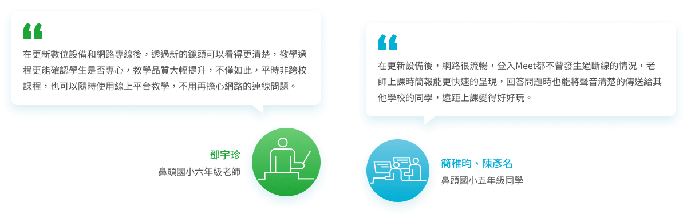
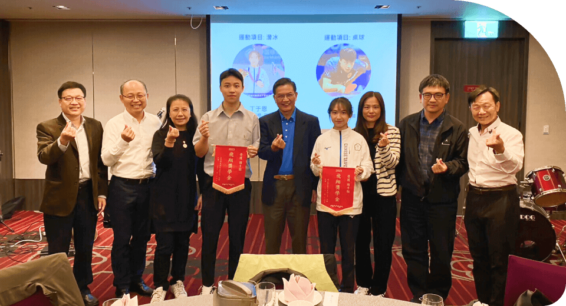
其中接受贊助之國手丁于恩，榮獲2023年第19屆亞州運動會滑輪女子自由式速度過樁賽銅牌。(照片右四)桌球國手張秉丞，在111年以優異的表現榮獲17歲中華青少年桌球國手資格，並於2023年印尼國際桌球錦標賽雙打榮獲第一名。(照片左四)
「飛」翔獎學金
2022年起開始推動「飛翔獎學金」讓南亞科技同仁子女申請，凡24歲以下的體育選手，符合國手資格或於全運會、全中運、教育部認證賽事表現優異者，透過獎金之贊助，讓選手能在穩定的金援下專心培訓，累積出賽經驗並專注於該技能職涯發展。截至2023年分別補助了在桌球、滑冰、跆拳道、競技體操、扯鈴等領域表現優異的4位國手及4位其他體育好手，共計8位。
特別報導4 擁抱多元. 創新共融. 邁向永續
多元化、公平性和共融性（Diversity, Equity and Inclusion, DEI）是南亞科技永續發展策略之一，也是南亞科技在實現企業願景：智慧時代最佳記憶體夥伴過程中的關鍵元素。秉持以人為本的企業精神，我們推動DEI內化使其成為組織文化與人員行為準則，為企業永續發展奠定良好基礎。
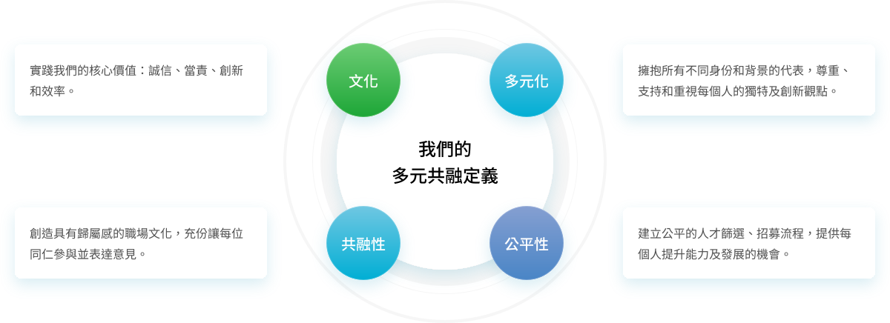
我們從人才吸引、招募、入職、培訓、發展、溝通、影響及改善等八階段，將DEI價值應用在日常工作中每一項流程，只要與人有關，我們秉持跨越團隊、層級和區域，建構符合DEI精神的體系，並透過培植同仁影響力，促進社會多元共融。
吸引
建立具多元共融的雇主品牌以吸引多元人才。
招聘
我們將面談資料表上與工作非直接相關的項目均改為非必填，例如性別、年齡、家庭狀況等，將DEI 價值融入招募流程，主動降低製造偏見的機會，讓招募人才的過程更加友善，同時對招募人員進行DEI面談技巧培訓。
入職
透過新人培訓營及Buddy輔導協助新進同仁適應組織環境、工作順利上手。
-
新人培訓營
每位新進人員到職第一天就會進入五天的新人培訓營，在培訓期間新進同仁能在團隊共識營中體驗並展現我們的核心價值，透過內部講師了解公司的環境、規章制度及組織，更能凝聚同梯次新進同仁們的情誼，感到安心有歸屬感。
-
部門新人Buddy輔導
由部門主管指派資深人員擔任新進人員的部門新人輔導人員(簡稱Buddy)為期一年，協助新人熟悉部門組織、適應環境、工作指導以及日常工作所需的協助，為有效提升Buddy與新進人員之關係建立，我們製作提供每位Buddy一本新人輔導手冊，安排Buddy參加新人輔導手法訓練培訓課程，提升輔導技巧，建立互相信任、有效溝通的友好關係。
-
新人輔導專人
針對到職二年內新進同仁，採有系統、協助性輔導措施及轉介專業機構，解決員工的問題，使其感受到尊重、關懷並減少工作上遭遇的困難，在個人工作崗位上穩定地學習及發展。
新人輔導路徑圖
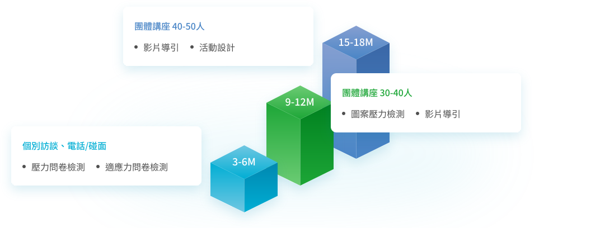
培訓
透過培訓，提高員工對多元性、公平性和共融性的意識和理解，例如：女．子好時代系列活動，提供持續對話平台，人文藝術素養系列講座，展現同仁的好奇心激發持續創新的新思維，都可以提高員工多元共融的意識、理解和參與度。
-
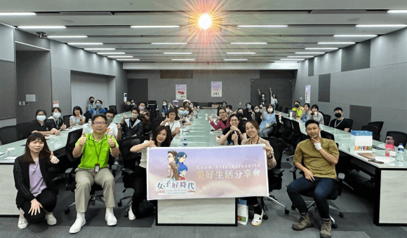
女力培力分享座談會大合照 -
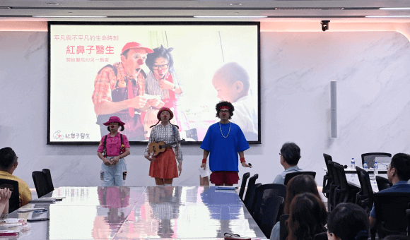
2023年人文藝術素養講座，邀請紅鼻子醫生分享生命故事
發展
培養更多管理人才擔任管理職位，深耕內部多元接班人，包含年齡、性別與背景的多樣性，確保公司持續擁有優秀的管理人才，保有南亞科技的核心價值和文化，讓管理者更能夠引領組織朝向永續發展。
管理人才發展計畫
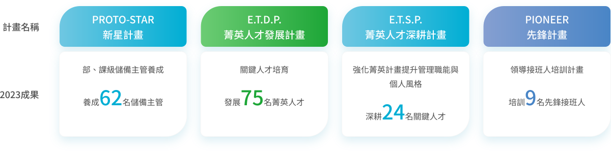
溝通
利用雙向溝通收集員工回饋，創造各種溝通平台讓員工表達需求，充份利用這些主動和被動的聽取渠道，包括問卷調查、電子意見信箱、全員會議及社交媒體平台等，這些資源有助於促進彼此理解並促成更有意義的溝通與對話，為所有員工創建更卓越的體驗。
共融的溝通管道
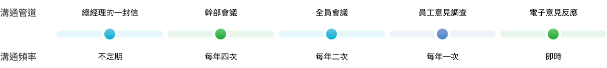
影響
建立合作夥伴關係並促進及影響社會多元性，以「人才培育」、「環境保育」、「人文關懷」、及「敦親睦鄰」社會參與四大主軸，有助於推動共融和具彈性的經濟發展，確保沒有人被遺落，同時鼓勵員工自提「愛鏈結」計畫，讓每個人都有發揮多元共融能量的機會，將DEI精神納入每個領域。
-
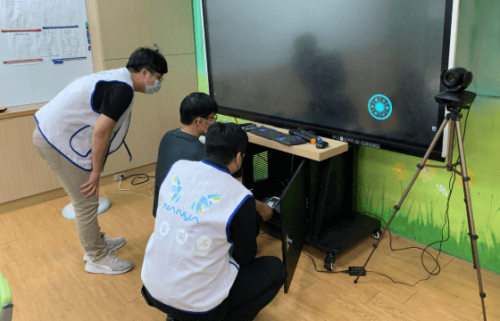
人才培育攜手校園為青年學子植入永續理念，並培植多元青年專才，培育各界人才，發揮賦能落實教育平權，減少城鄉差距。
偏鄉國小遠距共學捐贈新台幣 1,000,000 元設備 -
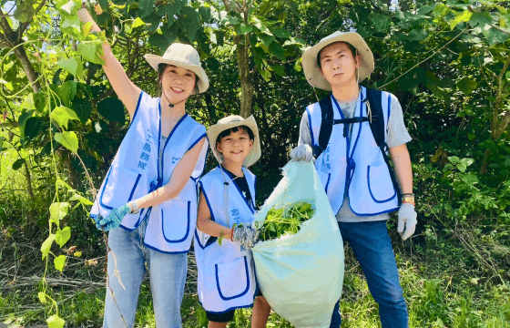
環境保育用實際行動改善因氣候變遷及環境污染對地球所造成的影響並喚起環境保育意識，守護生物多樣性，讓人與環境共融。
環保倡議-生態多樣性：移除小花蔓澤蘭 184.3 公斤 -
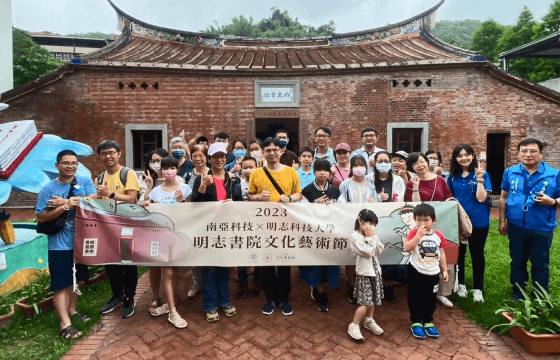
人文關懷鼓勵和支持員工參與志願服務，與政府、非營利組織和其他企業合作，提供資源和支持，以推動在地人文特色。
文藝復興系列活動共計 8,520 人次參與 -
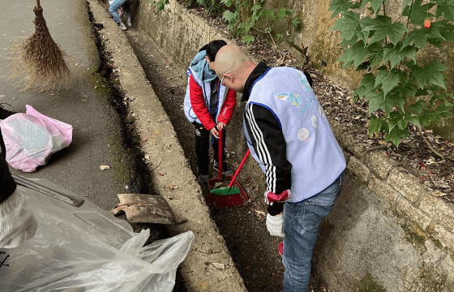
敦親睦鄰通過解決當地需求並尊重我們所在社區的獨特性，共建繁榮的社區。
深化社區溝通：鄰里互動 16,797 人次
改善
定期檢討和調整多元性策略，設立關鍵可衡量的指標並定期檢視各項指標，透過各項專案計畫、開發新流程或改善現有流程，讓南亞科技從承諾轉向有意義的行動，使個人、團隊和組織發揮其充份潛力，確保所有的員工都能感受要被肯定並有發展成長機會。
我們努力持續向前邁進
展望2024年及以後，南亞科技將繼續推動多元性、公平和共融性(DEI)的各項作為，為我們的員工、客戶和社會提供支持，一起擁抱多元，創新共融，邁向永續！